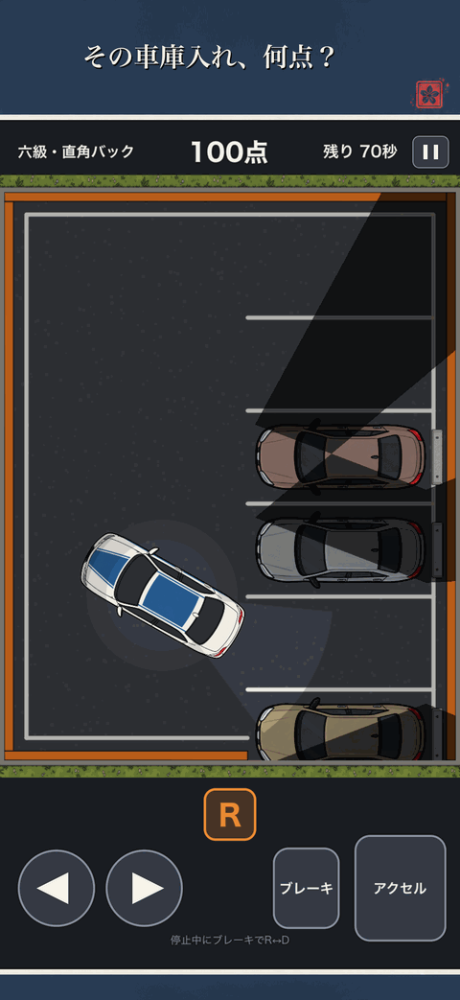
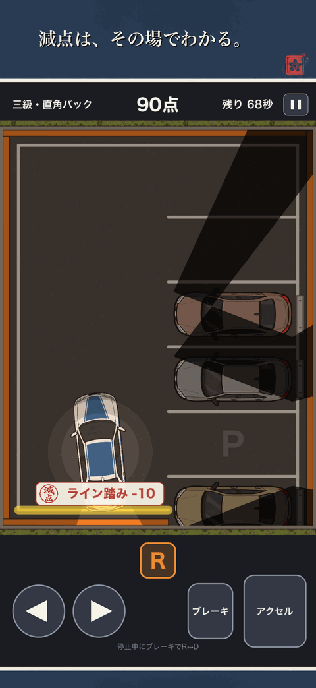
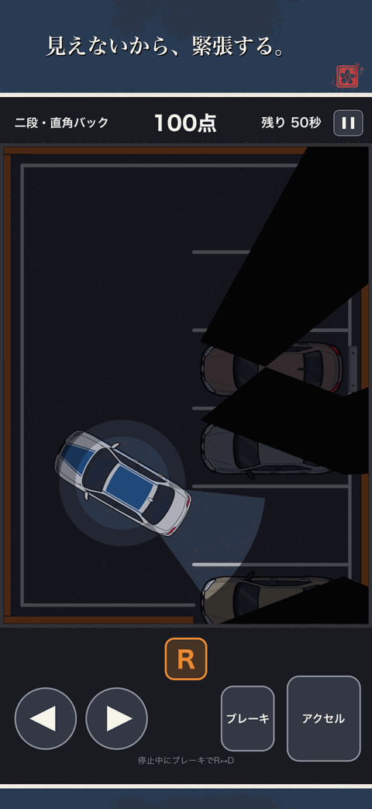
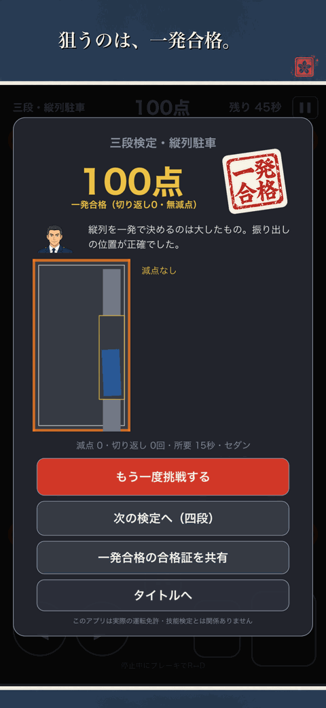
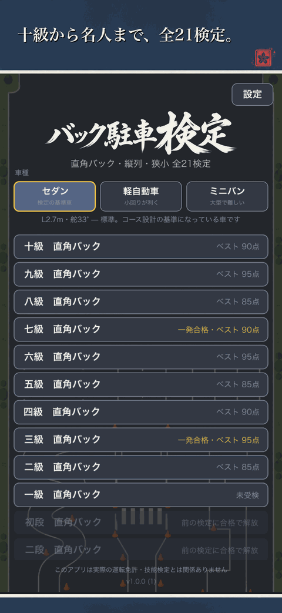

白線を踏めば減点。切り返しを重ねれば減点。斜めのまま止めても、枠の奥まで下がりきれなくても減点。どこで何点引かれたのかは、引かれた瞬間に画面へ出ます。
ライン踏み、切り返し、斜め、下がり足りない。何で何点引かれたのかが減点の瞬間に札で出るので、次に直すところが分かります。
合格すると次の級が開きます。壁や隣の車に当たれば、その場で検定中止。中止だけは点数では救えません。
車は前輪操舵の運動学モデルで動きます。切ってから向きが変わるまでに間があるので「あっ、切るのが遅かった」が起こります。枠へ吸い寄せる補正は入れていません。
合格の判子は「合格」。ですが、一度も切り返さず、一点も引かれずに収めた回だけ、判子が「一発合格」に変わります。合格すると、級と点数の入った合格証を画像で書き出して共有できます。
合格するたびに次の級が開きます。枠は狭くなり、制限時間は縮み、視界はどんどん効かなくなります。名人の狭小駐車まで、たどり着けますか。
はっきり見えるのは車のまわりと、後ろへ伸びるわずかな範囲だけ。遠くはぼやけ、壁の向こうは見えません。級が上がると昼が夕方に、夕方が夜になり、見える範囲はさらに狭まります。ただし理不尽にはしません。ぶつかる直前だけ、危ないラインが光って知らせます。





採点の途中で画面を奪われたら、検定というかたち自体が壊れます。だから検定中は割り込みません。